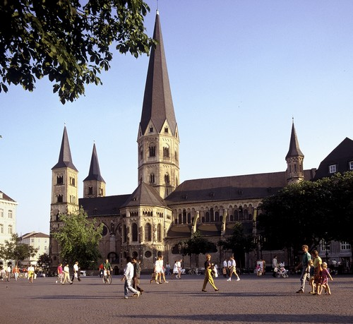

|
The Minster square is the largest square in the Bonn city pedestrian zone and the location of the Beethoven Memorial.  If not stated otherwise, all images copyright Michael Sondermann, City of Bonn Press Office (Presseamt Bonn) Edited by the AOSD Conference Committee. Send comments to: webmaster  aosd.net aosd.net |
||||||||||||||||||||||||||||||||||||||||||||||||||||||||||||||